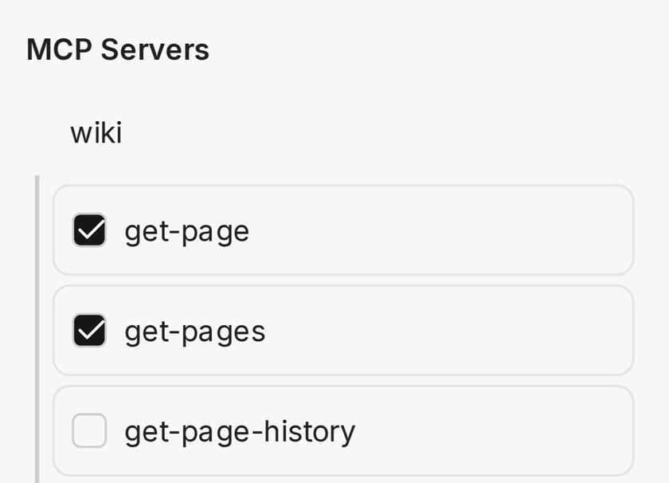
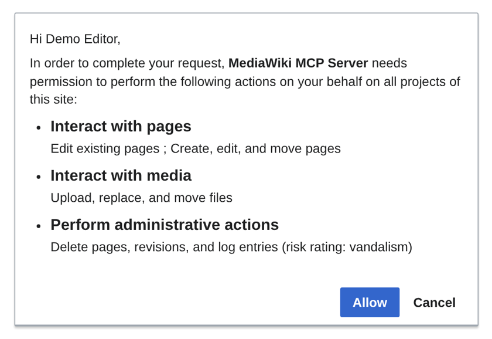

Your wiki in the AI tools you already use
AI inside your wiki
Claude, ChatGPT, Copilot, local models
Tools the AI can call
Same permissions and history as any editor
Pages, files, structured data
An open standard that lets AI tools use other software
8,300 in the last month
14 contributors
Claude Code · Claude Desktop · Codex · VS Code · Cursor · LM Studio · and more
Reads the wiki and writes the template, Lua module and gadget
Opens the result to check that it looks and works right
The task: a chart template for NeoWiki data, and a page that uses it

/plugin marketplace add ProfessionalWiki/MediaWiki-MCP-Server /plugin install mediawiki-mcp-server@professional-wiki
Plugins for Claude Code and Codex, a bundle for Claude Desktop, one click in VS Code and Cursor
{
"defaultWiki": "your.wiki.org",
"wikis": {
"your.wiki.org": {
"sitename": "Your Wiki",
"server": "https://your.wiki.org",
"articlepath": "/wiki",
"scriptpath": "/w"
}
}
}
A small config file. Read-only to start, if you like

Your wiki asks you, like any app connection. Edits carry your name
Every answer links the wiki pages it was drawn from
Uses only content the current user may see
Reasons more deeply for harder questions
Reads uploaded PDF and Office files
 Anthropic
Anthropic OpenAI
OpenAI Gemini
Gemini